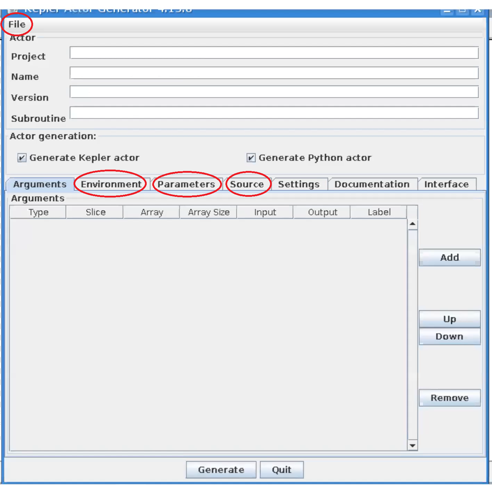
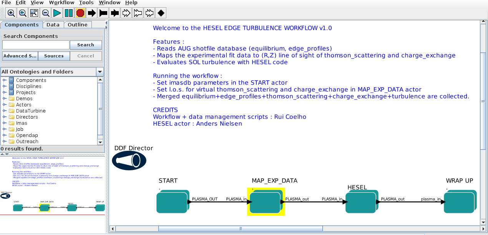
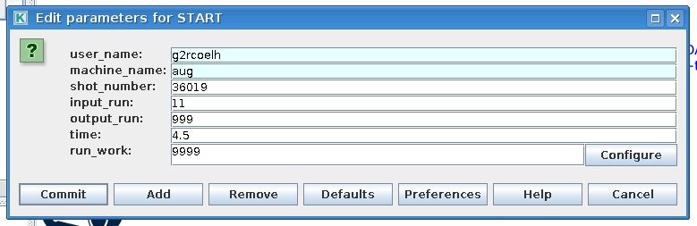
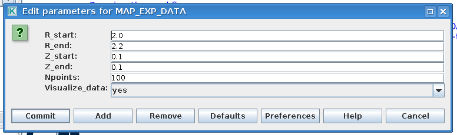
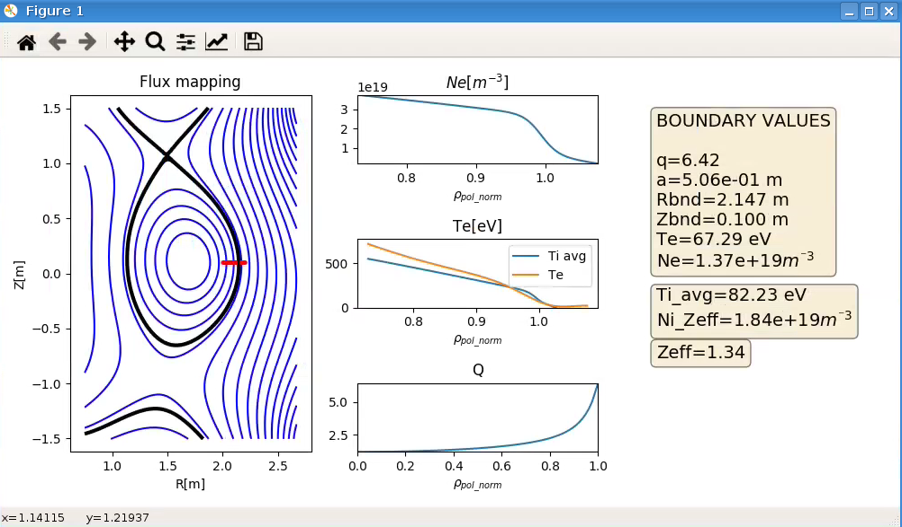
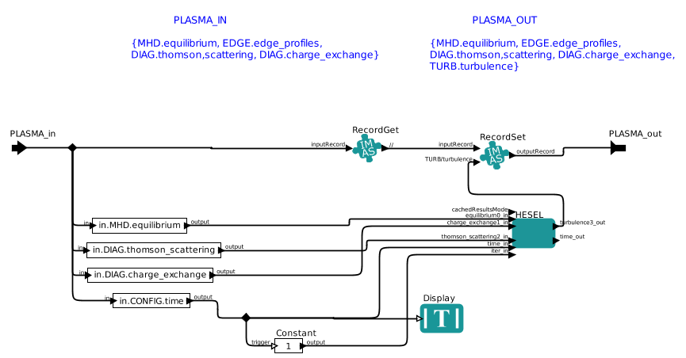
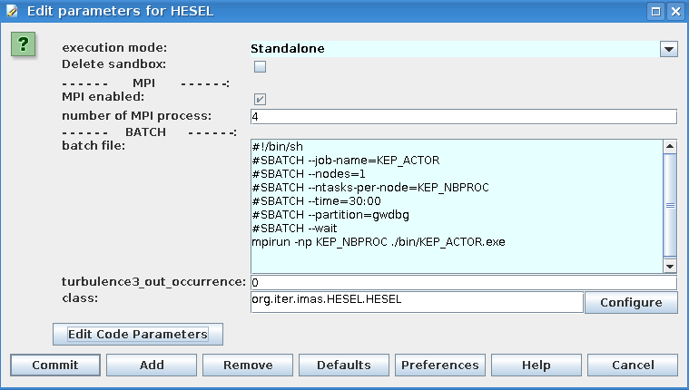
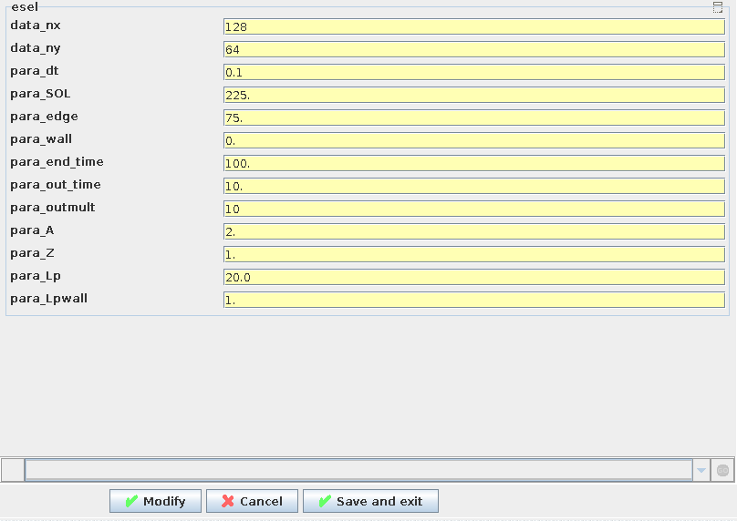

6. Turbulence with synthetic diagnostics workflows
The turbulence with synthetic diagnostics workflows consist of the HESEL and RENATE actors for turbulence simulation and synthetic diagnostics.
6.1. HESEL Documentation
The HESEL code is a numerical solver for the set of equations that describe the HESEL model. The HESEL model is a drift-reduced Braginskii type of two-fluid model for electron density, electron and ion pressures, and E-cross-B vorticity of a quasi-neutral plasma. The domain is a 2D slab perpendicular to the magnetic field line located at the outboard-midplane of a tokamak. The slab domain covers parts of the turbulent edge and SOL regions.

|

|
The HESEL 2D slab domain. Images from A.H. Nielsen et al 2019 Nucl. Fusion 59 086059. |
|
The solutions typically show the development of filaments (blobs) near the last-closed-flux-surface. The filaments propagate radially outwards through the SOL region, and carry heat and paticles away from the confined edge region.

|
Snapshot of solution fields for HESEL simulation |
There are plenty of publications in scientific journals based on HESEL (and its precessor ESEL) simulation data, in which the model equations are also described in detail. Below is listed a selected set of publications:
The HESEL code structure and how to run it as a stand alone code is described in HESEL as stand-alone, the workflow wrapper documentation is described in HESEL as an actor, and a guide on how to include HESEL in the KEPLER workflow is given in HESEL in the KEPLER workflow.
6.1.1. HESEL as stand-alone
HESEL can be run outside the workflow as a stand-alone code, where input are read from an input file and, optionally, from experimental data profiles. The output data are stored in a HDF5 datafile.
6.1.1.1. Obtaining and building HESEL
The HESEL source code is currenty maintained in a private Github repository (C-HESEL). For obtaining the source code please request access from ahnie@fysik.dtu.dk.
The following recipe describes how to load and build HESEL on the EUROfusion Gateway infrastructure.
On the Gateway first make sure the required modules are loaded. This can be assured by
module purge
module load cineca
module load imasenv
imasdb AUG
module unload hdf5
module load hdf5/1.8.17--intelmpi--2017--binary
For future convenience the above code block can be added to the ~/.login file and, if it does not load upon login, executed by source ~/.login.
Navigate to your Gateway public directory cd ~/public and clone the C-HESEL repository from GitHub
git clone https://github.com/PPFE-Turbulence/C-HESEL.git
Navigate into the C-HESEL directory cd C-HESEL and checkout the develop branch to work with the most recent updates
git checkout develop
Navigate into the FUTILS source directory cd FUTILS_version2.2/src and return
make clean && make -f Makefile.gateway
Navigate back to C-HESEL cd ../.. and return
make clean && make esel
Everything is now set up for you to run HESEL, which is located in C-HESEL/bin/esel.marconi.A3.
6.1.1.2. HESEL input
The stand-alone version of HESEL can be run either entirely from an input file, or in a setup where the initial density and temperature fields are read from an additional datafile. The probe positions for synthetic diagnogstics probes are provided in a separate datafile. All input files must be located in the same directory.
6.1.1.2.1. HESEL input
The HESEL input is read from a plain text file, with the input variables separated by line breaks. An example of an input file is given here. The main variables are
Variable |
Unit |
Decription |
|---|---|---|
codenametype |
Machine identifier |
|
shot_no |
Experiment shot number |
|
run_no |
Simulation run number |
|
nx |
Number of spatial grid points in x direction |
|
ny |
Number of spatial grid points in y direction |
|
xmin |
rhos |
Minimum x-axis limit |
xmax |
rhos |
Maximum x-axis limit |
ymin |
rhos |
Minimum y-axis limit |
ymax |
rhos |
Maximum y-axis limit |
dt |
oci^-1 |
Value of discrete timestep |
end_time |
oci^-1 |
Duration of simulation |
out_time |
oci^-1 |
Time between small outputs |
outmult |
Number of small outputs before full fields are written out |
|
edge |
rhos |
Width of edge region |
SOL |
rhos |
Width of SOL region |
wall |
rhos |
Width of wall region |
n0 |
m^-3 |
Electron density at last closed flux surface |
te0 |
eV |
Electron temperature at last closed flux surface |
ti0 |
eV |
Ion temperature at last closed flux surface |
Mp |
eV |
Parallel Mach number |
A |
Mass number |
|
Z |
Charge number |
|
Zeff |
Effective charge |
|
q |
Safety factor at last closed flux surface |
|
B0 |
T |
Magnetic field on axis |
r0 |
m |
Minor radius |
R0 |
m |
Major radius |
Lp |
m |
Parallel connection length in the SOL region |
Lpwall |
m |
Parallel connection length in the wall shadow region |
The remaining variables in the input file are better left unchanged.
Variable |
Default value |
|---|---|
coordsys |
0 |
gamma |
0.00 |
sigma |
0.00 |
bprof |
1.0 |
damping_nt |
1 |
dissipation_nt |
|
beta |
0 |
mue_n_fac |
1.0 |
mue_p_fac |
1.0 |
mue_P_fac |
1.0 |
mue_w_fac |
1.0 |
ballooning |
2 |
visc_layer_size |
0.25 |
drift_wave_term |
2 |
drift_wave_Te |
1 |
radial_electric_field |
0 |
MP |
0 |
MP_NS |
100000 |
MP_SR |
0.0000005 |
hyper_factor |
0.00000 |
sheath |
2 |
background |
1 |
background_n |
0.025 |
background_t |
1.0 |
background_time |
20 |
ramb_up |
1 |
ramb_up_time |
5000 |
fp |
10 |
fixed_time |
50 |
init |
999 |
init_ds |
1 |
mean_flow |
5 |
mean_flow_time |
0.025 |
mean_flow_radial |
1.0 |
mean_dissipation |
0 |
randbedingung0 |
2 |
bdvala0 |
0.000000 |
bdvalb0 |
0.000000 |
amp_random0 |
0.0001 |
randbedingung1 |
2 |
bdvala1 |
1 |
bdvalb1 |
0.00 |
amp_random1 |
0.0001 |
randbedingung2 |
2 |
bdvala2 |
1 |
bdvalb2 |
0.00 |
amp_random2 |
0.0001 |
randbedingung3 |
2 |
bdvala3 |
1 |
bdvalb3 |
0.00 |
amp_random3 |
0.0001 |
6.1.1.2.2. Profile datafile
The profile datafile provide the initial density and temperature field profiles, which also serve as reference profiles towards which the solution is relaxed in the innermost edge region of the HESEL domain. The datafile must have the filename exp_profiles.dat and an example can be found here.
The datafile consists of four space-separated columns of data, so that each row constitute a datapoint. In each datapoint is the following data
Column |
Variable |
Unit |
|---|---|---|
1 |
Radial position with LCFS at 0 |
m |
2 |
Electron density |
10^19 m^-3 |
3 |
Electron temperature |
eV |
4 |
Ion temperature |
eV |
6.1.1.2.3. Probe positions
The HESEL code will produce a set of default output data described in HESEL output. Additional temporally highly resolved 1D data can be added from synthetic probes located in a row througout the domain. They are poloidally centered in the domain and located with a radial distance of 1 rhos. In the probe datafile, which must be named myprobe.dat, is specified the number of tips and their relative location, and the fields measured. An example of a probe datafile is found here.
The format must follow that of the provided example. Each tip has a specified relative position to the probe position in units of grid point spacing. I.e., the block
# -------------------------------------------------------------------
# TIP1
# -------------------------------------------------------------------
@TIP1 10.0 0.0 hdf5
density
vorticity
temperature
potential
velocity_radial
velocity_poloidal
adds a probe-tip at 10 grid points radially outwards and at the same poloidal position as that of the probe. It outputs the electron density (density), E-cross-B vorticity (vorticity), electron temperature (temperature), the electrostatic potential (potential), radial velocity (volocity_radial), and poloidal velocity (velocity_poloidal) at the specified gridpoint. All output are in Bohm-normalized units.
6.1.1.3. HESEL code structure
The HESEL stand-alone code structure is graphed below

|
HESEL structure graph |
The workflow of the top level functions are described in the following. The function description is meant to give an high-lelvel overview of the workflow and supplement the in-code comments.
main(int argc, char *argv[])
The main function is a wrapper for passing the programme arguments argc and argv to the esel_start_from_c function. The variable argv is a character list of programme arguments and argc is an integer that denote the number of items in argv.
esel_start_from_c(itype argc, ctype **argv)
The esel_start_from_c function contains the core workflow of the solver. It creates the two structures, data and para, that, together with argc and argv, are passed through the HESEL workflow.
Everything up to the run_esel function is initialization of data, MPI, etc.
The programme arguments are interpreted and applied in func_passing_argv
func_passing_argv(argc, argv, &data, ¶)
The function determine if the simulation is starting from previous simulation data or not, by checking, if the flag -restart is in the programme arguments. It iterates through the other arguments; if -I the input data are to be loaded from an ini-file, if -H the input data are to beloaded from an HDF5 file, and if -wrapper the data are to passed from a programme wrapper. The input file option is stored in the para structure and applied after the set_default_parameters function.
and the set_default_parameters function is called.
set_default_parameters(&data,¶)
This function is deprecated and does not alter the data and para structures.
Depending on where the input parameters are stored, one of three functions are called. The information of input file type is set in the para structure by the func_passing_argv function. If the input are stored in a c-file func_wrapper is called, in an ini-file func_inifile is called, and in a HDF5 file func_hdf5file is called.
func_wrapper(argc, argv, &data, ¶)
Checks if the restart option is set to true in the para structure; if so, the code exits, as that option is not compatible with the wrapper setup.
The function calls a number of subfuntions to initialize the para and data structures from the input given by the wrapper, that would otherwise be read from an ini-file as described in HESEL input. All data are appended to the para and data structures.
func_inifile(argc, argv, &data, ¶)
Checks if the restart option is set to true in the para structure; if so, the code exits, as that option is not compatible with the inifile setup.
The function calls a number of subfuntions to initialize the para and data structures from the input file described in HESEL input. All data are appended to the para and data structures.
func_hdf5file(argc, argv, &data, ¶)
The function calls a number of subfuntions to initialize the para and data structures from the input given by a HDF5 file, that would otherwise be read from an ini-file as described in HESEL input. The data are stored in the /params/structure_data and /params/structure_param groups described in HESEL output. All data are appended to the para and data structures.
The data and para structures are initialized further in func_common_init
func_common_init(&data, ¶)
The current time variables are stored in the para structure, and the data attribute range is set from the domain limits stored in para. The function checks the para attribute coordsys to determine the labels on the data attributes coordsys and dim_label.
and settings defined in esel_settings.
esel_settings(&data, ¶)
Derived parameters are stored in the para and data structures. This includes grid spacings, output switches, datafile name (based on the para attributes codename, shot_no and run_no), and computer specific attributes.
The MPI communicaters and parameters are set up in PH_MPI_Prepare
PH_MPI_Prepare(&data,¶)
The geometry is specified for the MPI. Periodic boundaries are set and neighbouring coordinates are defined for parallelization in the x-direction.
and fields are initialized in func_common_init_fields.
func_common_init_fields(&data, ¶)
The solution fields are initialized with random noise. If no input files are provided the solution fields are assigned default initial profiles.
The probe configuration, for obtaining high temporally resolved data at probe positions, are loaded in the function read_probe_configuration.
read_probe_configuration()
The probe configuration is obtained from the probe configuration file Probe positions. A structure array of pype probe_t is created to store the probe information.
Everything is now initialized and the system of differential equations is solved in run_esel
run_esel(&data, ¶)
The first half of the run_esel function finalizes the initialization; variables and fields are allocated and some loaded from the data and para structures. The logarithm of boundary values and fields is calculated for the solution fields. The field background values are derived. The ion temperature ramp-up scheme is initialized, and boundary values are applied.
The HDF5 output file is created and initial data stored in the para and data structures are written to this.
The second half of the run_esel function consists of a loop which iterates through the time range in steps of dt. The time loop has the following steps:
Print datasets to the HDF5 output file
At specified time intervals the soulution fields and derived fields (w.g. profiles and integrated values) are written to the output file.
The fields are testet for nan values
The ion temperature is ramped up
If a ramp-up scheme is chosen for the ion temperature the increase in ion edge pressure profile is executed at this stage, and the inner boundary condition updated accordingly.
The forward time step values of the (logarithmic) solution fields are calculated
In the order; generalized vorticity, density, electron temperature, ion temperature. After each time step is calculated the step is made and dissipation applied.
The solution fields are derived
From their log values, and the vorticity and electrostatic potential is calculated from the generalized forticity.
The higly resolved probe data is written
Running avarages, turbulent energy, particle flux are calculated
And the energies are written to the output file
The program is terminated by an exit() command after the time loop termination condition is reached.
6.1.1.4. Running a HESEL simulation
HESEL is run in from the data directory, containing the input file (and optional data files) using mpirun. In the data directory return
mpirun -np=<number_of_processors> <path_to_esel> -I <input_file_name>
Here <number_of_processors> is the number of processors to run the code and must be a power of 2, <path_to_esel> is the path to the compiled HESEL code conventionally located in C-HESEL/bin/esel.marconi.A3 for a MARCONI install, and <input_file_name> is the name of the input file described in HESEL input.
6.1.1.5. HESEL output
For a run with an input file filename HESEL produces two output files; filename.erh and filename.h5. The .erh file reviews the run settings and displays key parameters for the simulation. The full simulation data output is stored in the hdf5 file.
The structure of the output datafile filename.h5 is
/data
/data/var0d
/data/var1d
/data/var1d/fixed-probes
/data/var2d
/data/var2d/grid
/data/var3d
/data/xanimation
/documentation
/equil
/params
/params/structure_data
/params/structure_param
The content of the groups are described in detail below.
data
The data group stores the subgroups with the solution data and derived data that are of interest. The data are grouped into the number of spatial dimensions of the data, e.g., the var1d group contains data of one spatial dimension (e.g., temporal evolution of profiles). The data subgroups are
var0d This group contains derived data of zero spatial dimension.
Variable
Dimensions
Description
SOL_density
end_time/out_time
Spatially iend_time/out_timeegrated SOL density
SOL_energy_elec
end_time/out_time
Spatially iend_time/out_timeegrated SOL electron energy
SOL_energy_ion
end_time/out_time
Spatially iend_time/out_timeegrated SOL ion energy
Te0
end_time/out_time
Electron reference temperature at LCFS
Ti0
end_time/out_time
Ion reference temperature at LCFS
cflp
end_time/out_time
cflr
end_time/out_time
dEdt
end_time/out_time
energy_elec
end_time/out_time
Spatially iend_time/out_timeegrated electron energy for the domain
energy_gkin
end_time/out_time
energy_ion
end_time/out_time
Spatially iend_time/out_timeegrated ion energy for the domain
energy_kin
end_time/out_time
energy_kin_0
end_time/out_time
energy_kin_f
end_time/out_time
energy_out_P
end_time/out_time
energy_out_p
end_time/out_time
pe_curv_f
end_time/out_time
pe_curv_pi
end_time/out_time
pi_curv_f
end_time/out_time
shear
end_time/out_time
total_density
end_time/out_time
Spatially iend_time/out_timeegrated density for the domain
total_energy
end_time/out_time
Spatially integrated total energy for the domain
var1d This group contains derived data of one spatial dimension.
Variable
Dimensions
Description
CLSOED field line
Nx
Array with 1 in edge region, 0 in SOL region
Density-Prof
end_time/(out_time*otmult) x Nx
Low temporally resolved density profile
Density-inst
end_time/out_time x Nx
High temporally resolved density profile
Diff-Ion-Flux-Tgrad(n)-inst
end_time/out_time x Nx
Ti*grad(n) profile
Diff-Ion-Flux-grad(P)-inst
end_time/out_time x Nx
grad(Pi) profile
Diff-Ion-Flux-ngrad(T)-inst
end_time/out_time x Nx
n*grad(Ti) profile
Diff-den-Flux-grad(n)-inst
end_time/out_time x Nx
grad(n) profile
Diff-ele-Flux-grad(p)-inst
end_time/out_time x Nx
grad(Pe) profile
Ele-Pres-Prof
end_time/(out_time*otmult) x Nx
Low temporally resolved electron pressure profile
Ele-Pres-inst
end_time/out_time x Nx
High temporally resolved electron pressure profile
Ele-Temp-Prof
end_time/(out_time*otmult) x Nx
Low temporally resolved electron temperature profile
Ele-Temp-inst
end_time/out_time x Nx
High temporally resolved electron temperature profile
Flux-P-tur
end_time/(out_time*otmult) x Nx
Flux-P-tur-inst
end_time/(out_time*otmult) x Nx
Flux-T-tur
end_time/(out_time*otmult) x Nx
Flux-heat-P-tur
end_time/(out_time*otmult) x Nx
Flux-heat-p-tur
end_time/(out_time*otmult) x Nx
Flux-p-tur
end_time/(out_time*otmult) x Nx
Flux-p-tur-inst
end_time/(out_time*otmult) x Nx
Flux-pres_tur
end_time/(out_time*otmult) x Nx
Flux-t-tur
end_time/(out_time*otmult) x Nx
Gen-Vort-Prof
end_time/(out_time*otmult) x Nx
Low temporally resolved generalized vorticity profile
Gen-Vort-inst
end_time/out_time x Nx
High temporally resolved generalized vorticity profile
Ion-Pres-Prof
end_time/(out_time*otmult) x Nx
Low temporally resolved ion pressure profile
Ion-Pres-inst
end_time/out_time x Nx
High temporally resolved ion pressure profile
Ion-Temp-Prof
end_time/(out_time*otmult) x Nx
Low temporally resolved ion temperature profile
Ion-Temp-inst
end_time/out_time x Nx
High temporally resolved ion temperature profile
OPEN field line
Nx
Array with 0 in edge region, 1 in SOL region
Pot-Prof
end_time/(out_time*otmult) x Nx
Low temporally resolved electrostatic potential profile
Pot-inst
end_time/out_time x Nx
High temporally resolved electrostatic potential profile
Pressure-stress1-inst
end_time/out_time x Nx
Pressure-stress2-inst
end_time/out_time x Nx
Pressure-stress3-inst
end_time/out_time x Nx
Pressure-work1-inst
end_time/out_time x Nx
Pressure-work2-inst
end_time/out_time x Nx
Pressure-work3-inst
end_time/out_time x Nx
Reynolds-stress-inst
end_time/out_time x Nx
Reynolds-work-inst
end_time/out_time x Nx
Tur-par-Flux
end_time/(out_time*otmult) x Nx
Tur-par-Flux-inst
end_time/out_time x Nx
fp_P
Nx
fp_fluc
Nx
fp_mean
Nx
fp_n
Nx
fp_p
Nx
fp_w
Nx
gf-inst
end_time/out_time x Nx
mean_vp
end_time/(out_time*otmult) x Nx
mean_w
end_time/(out_time*otmult) x Nx
rcor
Nx
sheath_profile
end_time/(out_time*otmult) x Nx
Redundant
visc_P
end_time/(out_time*otmult) x Nx
visc_n
end_time/(out_time*otmult) x Nx
visc_p
end_time/(out_time*otmult) x Nx
visc_w
end_time/(out_time*otmult) x Nx
- fixed-probes
This group contains temporally higly resolved spatial data at probe postions. Below is given an example for probes with only one probe tip (TIP0). For multiple probe tips the output data list expands accordingly.
Variable
Dimensions
Description
TIP0_density
end_time/10 x xmax
Density at probe position at very high temporal resolution
TIP0_potential
end_time/10 x xmax
Electrostatic potential at probe position at very high temporal resolution
TIP0_temperature
end_time/10 x xmax
Electron temperature at probe position at very high temporal resolution
TIP0_temperature_i
end_time/10 x xmax
Ion temperature at probe position at very high temporal resolution
TIP0_velocity_poloidal
end_time/10 x xmax
Poloidal velocity at probe position at very high temporal resolution
TIP0_velocity_radial
end_time/10 x xmax
Radial velocity at probe position at very high temporal resolution
TIP0_vorticity
end_time/10 x xmax
Vorticity at probe position at very high temporal resolution
- var2d
This group contains the solution data (Density, Gen_Vorticity, Ion_Pressure, Pressure) and derived data of (mostly) two spatial dimensions.
Variable
Dimensions
Description
Density
end_time/(out_time*otmult) x Nx x Ny
Density
Gen_Potential
end_time/(out_time*otmult) x Nx x Ny
Generalized potential
Gen_Vorticity
end_time/(out_time*otmult) x Nx x Ny
Generalized vorticity
Ion_Pressure
end_time/(out_time*otmult) x Nx x Ny
Ion pressure
Ion_temp
end_time/(out_time*otmult) x Nx x Ny
Ion temperature
Magnetic Field (b_0)
Nx
Magnetic field
Potential
end_time/(out_time*otmult) x Nx x Ny
Electrostatic potential
Pressure
end_time/(out_time*otmult) x Nx x Ny
Electron pressure
Temperature
end_time/(out_time*otmult) x Nx x Ny
Electron temperature
Vorticity
end_time/(out_time*otmult) x Nx x Ny
Vorticity
grid This group contains the two dimensional spatial grid.
Variable
Dimensions
Description
x
Nx x Ny
x-grid
y
Nx x Ny
y-grid
var3d
Currently no data are stored in this group.
xanimation This group contains the solution data (and the electric potential) at high spatial, low temporal resolution, aimed for visual representation of the data.
Variable
Dimensions
Description
density
end_time/out_time x Nx/4 x Ny/4
High temporal, low spatial resolved density (for animations)
electron_pressure
end_time/out_time x Nx/4 x Ny/4
High temporal, low spatial resolved electron pressure (for animations)
ion_pressure
end_time/out_time x Nx/4 x Ny/4
High temporal, low spatial resolved ion pressure (for animations)
potential
end_time/out_time x Nx/4 x Ny/4
High temporal, low spatial resolved electrostatic potential (for animations)
vorticity
end_time/out_time x Nx/4 x Ny/4
High temporal, low spatial resolved vorticity (for animations)
documentation
The documentation group contains two datafiles, which are merely copies of the input files.
Filename
Description
myprobe.dat
Copy of myprobe.dat datafile described in Probe positions.
run.ini
Copy of input file described in HESEL input.
equil
Currently no data are stored in this group.
params
This group contains two subgroups with parameter data that are either defined in, or derived directly from, the input file. These data are mainly for the purpose of restarting a simulation from an existing HDF5 output file.
structure_data
Variable
Dimensions
Description
cwd
1
Current working directory
desc
1
Redundant
dims0
1
Same as ny
dims1
1
Number of x gridpoints
dims2
1
Redundant
elements0
1
Same as ny
elements1
1
Same as nx
elements2
1
Redundant
lnx
1
Same as nx
lny
1
Same as ny
lnz
1
Redundant
maschine
1
Operating system
number
1
Redundant
nx
1
Number of x gridpoints per processor
ny
1
Number of y gridpoints
nz
1
Redundant
offx
1
offy
1
offz
1
range00
1
Lower y boundary [rhos]
range01
1
Upper y boundary [rhos]
range10
1
Lower x boundary [rhos]
range11
1
Upper x boundary [rhos]
range20
1
Redundant
range21
1
Redundant
rank
1
2 for 2D code (only option)
structure_param
Variable
Dimensions
Description
A
1
Given in HESEL input
B0
1
Given in HESEL input
Lp
1
Given in HESEL input
Lpwall
1
Given in HESEL input
MP
1
Given in HESEL input
MP_NS
1
Given in HESEL input
MP_SR
1
Given in HESEL input
Mp
1
R0
1
Given in HESEL input
SOL
1
Given in HESEL input
Te0
1
Given in HESEL input
Ti0
1
Given in HESEL input
Z
1
Given in HESEL input
Zeff
1
Given in HESEL input
adv_P
1
adv_n
1
adv_p
1
adv_w
1
amp_random0
1
Given in HESEL input
amp_random1
1
Given in HESEL input
amp_random2
1
Given in HESEL input
amp_random3
1
Given in HESEL input
background
1
Given in HESEL input
background_n
1
Given in HESEL input
background_t
1
Given in HESEL input
background_time
1
Given in HESEL input
bdval00
1
bdval01
1
bdval10
1
bdval11
1
bdval20
1
bdval21
1
bdval30
1
bdval31
1
bdval40
1
bdval41
1
beta
1
Given in HESEL input
boundary0
1
boundary1
1
boundary2
1
boundary3
1
bprof
1
Given in HESEL input
con_P
1
con_p
1
coordsys
1
Given in HESEL input
cs
1
Ion sound speed [rhos w_ci]
damping_nt
1
Given in HESEL input
dissipation_nt
1
Given in HESEL input
dkx
1
dky
1
dkz
1
drift_wave_Te
1
Given in HESEL input
drift_wave_term
1
Given in HESEL input
dt
1
Given in HESEL input
dx
1
x grid point spacing [rhos]
dy
1
y grid point spacing [rhos]
dz
1
Redundant
edge
1
Given in HESEL input
end_time
1
Given in HESEL input
energy
1
fixed_time
1
fp
1
Given in HESEL input
gamma
1
Given in HESEL input
gradB
1
hyper_factor
1
Given in HESEL input
init
1
Given in HESEL input
init_ds
1
Given in HESEL input
lamda
1
limiter
1
mean_dissipation
1
mean_flow
1
mean_flow_radial
1
mean_flow_time
1
mue_P
1
mue_P_fac
1
Given in HESEL input
mue_n
1
mue_n_fac
1
Given in HESEL input
mue_p
1
mue_p_coupling
1
mue_p_fac
1
Given in HESEL input
mue_t
1
mue_t_fac
1
mue_w
1
mue_w_fac
1
Given in HESEL input
ne0
1
nprof
1
offset
1
otmult
1
Given in HESEL input
out_time
1
Given in HESEL input
phiprof
1
q
1
Given in HESEL input
r0
1
Given in HESEL input
ramb_up
1
Given in HESEL input
ramb_up_time
1
Given in HESEL input
rho_e
1
Electron thermal gyro-radius [m]
rho_i
1
Ion thermal gyro-radius [m]
rho_s
1
Cold-ion hybrid thermal gyro-radius [m]
run_no
1
Given in HESEL input
sheath
1
shot_no
1
Given in HESEL input
sigma
1
Given in HESEL input
time
1
tprof
1
w_ce
1
Electron cyclotron frequency [s^-1]
w_ci
1
Ion cyclotron frequency [s^-1]
wall
1
Given in HESEL input
xmax
1
Given in HESEL input
xmin
1
Given in HESEL input
ymax
1
Given in HESEL input
ymin
1
Given in HESEL input
6.1.2. HESEL as an actor
In this part HESEL is build as a library. First ensure that you have access to the cpo_interface SVN repository. In a browser load
https://gforge-next.eufus.eu/
and ask for a new password if you cannot login. If you do not have access contact ahnie@fysik.dtu.dk. On the EUROfusion Gateway open a terminal, change directory to (suggested) your public folder. Download the C-HESEL repository by following the guide in HESEL as stand-alone. In the C-HESEL repository check out the branch called WPCD-workflow-dev
git checkout WPCD-workflow-dev
and make sure that the commit 40da0f4dcb9aa6063d500f6c4fa824071042b77e made on 23.6.2021 is included. Now, in the C_HESEL directory return
cd FUTILS_version2.2/src
make -f Makefile.gateway clean
make -f Makefile.gateway
cd ../..
make clean
make esel
make libhesel
After that, and still in you public folder, return the following
svn co https://gforge-next.eufus.eu/svn/cpo_interface
to checkout the wrapper repository. Now enter the directory
cd cpo_interface/tags/3.31.0/ids
and edit the file Makefile.gateway. In this file you will find four lines that contain a reference to a path belonging to the user g2ahnie. Those lines are line no. 11, 13, 20 and 23. Change the path in those lines to that which points to the corresponding files in the C-HESEL repository in your public directory. Save the edit, quit the editor and in the terminal return
make -f Makefile.gateway clean
make -f Makefile.gateway libhesel
to make the HESEL library libheselwrapper.a.
6.1.3. HESEL in the KEPLER workflow
On the EUROfusion Gateway build the HESEL library as described in HESEL as an actor. Open a terminal and return the following to load the required modules
module purge
module load cineca
module load imasenv/3.31.0/rc
module unload itm-hdf5 hdf5
module load itm-hdf5/1.8.17/intel/17.0/mpi
module switch kepler/2.5p5-3.1.1_3.31.0_rc
module switch imas-fc2k/4.13.0
If not installed already, install Kepler by returning
kepler_install <username>
where <username> is your usename for the Gateway and allow for the directory to be created if prompted for this. After installing Kepler load it by
kepler_load <username>
A number of directories have to be moved to other partitions and replaced by symbolic links. In the terminal return the following
cd ~
mkdir work (if it does not already exist)
mkdir work/KEPLEREXECUTION (if it does not already exist)
cd public
mv imasdb ../work/
ln -s ../work/imasdb imasdb
ln -s ../work/KEPLEREXECUTION KEPLEREXECUTION
And an IMAS database initiated
imasdbs -u <username>
In the terminal return
fc2k
This will open a new window to generate a Kepler actor.
|  |
Kepler actor generator window |
In the file menu click open and navigate to the file (most likely located in) public/cpo_interface/tags/3.31.0/scripts/Actors/HESEL_1.0.0.xml and click open. In the tabs Environment, Parameters, and Source, if applicable, change the paths that belong to the user g2ahnie to the corresponding paths in your system. Click Generate to generate the actor from the wrapper that calls the HESEL code.
In the terminal run KEPLER by returning
kepler
this will open a new window. In KEPLER open the HESEL actor that was just generated in file -> open to load the workflow.
|  |
HESEL workflow in KEPLER |
In the first actor, START, constrols the workflow input. By double clicking the box a window pops up which allows for the user to edit the workflow input parameters
|  |
Edit HESEL workflow input parameters |
The input have the following descriptions
Variable
Description
user_name
Name of user from which experiment imas database are loaded
machine_name
Short name of device
shot_number
Machine shot number
input_run
Input run number for HESEL realisation
output_run
Output run number for HESEL
time
Time at which experimental data are pulled
The second actor, MAP_EXP_DATA, maps the input profiles that HESEL will use as initial conditions and reference profiles in the forcing region. If you double click the box the following editing window is opened
|  |
Edit HESEL workflow data mapping parameters |
The input have the following descriptions
Variable
Description
R_start
Radial profile coordinate starting position
R_end
Radial profile coordinate ending position
Z_start
Longitudinal profile coordinate starting position
Z_end
Longitudinal profile coordinate ending position
Npoints
Grid resolution
Visualize_data
Whether to visualize the profile data or not
Note that if yes is selected for Visualize_data, the data will be displayed as below and the workflow stops.
|  |
Example of resulting window when Visualize_data is selected |
To run the workflow beyond the MAP_EXP_DATA actor the value for Visualize_data has to be no when the workflow is initiated.
The third, and last editable, actor is the HESEL actor. Right-click this box and select Open Actor to edit the submission script and non-predetermined HESEL input parameters. The following window appears when the actor is opened.
|  |
Workflow within the HESEL actor |
The only relevant actor within this sub-workflow is that called HESEL. When this box is double clicked the following window appears
|  |
The HESEL actor where submission data can be edited |
The batch file appears in this window and it is possible to adjust this to alter submission data. If the button Edit Code Parameters is clicked the following option to edit the (mainly numerical) HESEL input parameters that cannot be determined from experimental data appears
|  |
The non-predetermined HESEL input parameters can be edited |
Where the descriptions of the parameters is given in HESEL input.
When the input parameters for all actors of the workflow are set the HESEL EDGE TURBULENCE WORKFLOW is initated by pressing the green triangle button in the outermost workflow.
The output data are stored in the ~/work/imasdb folder according to the structure described in HESEL output.